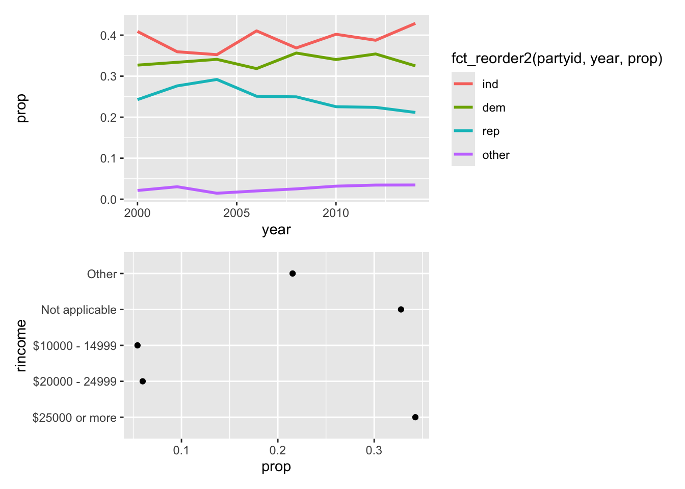

Factors are used for categorical variables - known set of possible values.
Also useful when displaying character vectors in non-alphabetical order.
Prerequisites
# Base R and forcats package included in tidyverse will be usedlibrary(tidyverse)
── Attaching core tidyverse packages ──────────────────────── tidyverse 2.0.0 ──
✔ dplyr 1.2.1 ✔ readr 2.2.0
✔ forcats 1.0.1 ✔ stringr 1.6.0
✔ ggplot2 4.0.3 ✔ tibble 3.3.1
✔ lubridate 1.9.5 ✔ tidyr 1.3.2
✔ purrr 1.2.2
── Conflicts ────────────────────────────────────────── tidyverse_conflicts() ──
✖ dplyr::filter() masks stats::filter()
✖ dplyr::lag() masks stats::lag()
ℹ Use the conflicted package (<http://conflicted.r-lib.org/>) to force all conflicts to become errors
library(patchwork)
Factor basics
x1 <-c("Dec", "Apr", "Jan", "Mar")# Issues: Only twelve possible months and danger of typos; doesn't sort in useful wayx2 <-c("Dec", "Apr", "Jam", "Mar")sort(x1)
[1] "Apr" "Dec" "Jan" "Mar"
# Solution: Factors# create list of valid levelsmonth_levels <-c("Jan", "Feb", "Mar", "Apr", "May", "Jun","Jul", "Aug", "Sep", "Oct", "Nov", "Dec")
# Specifiying Levelsy <-factor(x = x1) # omitting levels results in levels being taken from data in alphabetical ordery
[1] Dec Apr Jan Mar
Levels: Jan Feb Mar Apr May Jun Jul Aug Sep Oct Nov Dec
sort(y1) # with levels added, can ensure correct alphabetical order
[1] Jan Mar Apr Dec
Levels: Jan Feb Mar Apr May Jun Jul Aug Sep Oct Nov Dec
# What happens to typos after adding levels?y2 <-factor(x = x2, levels = month_levels)y2 # can see that typo will be spottet by predefining levels
[1] Dec Apr <NA> Mar
Levels: Jan Feb Mar Apr May Jun Jul Aug Sep Oct Nov Dec
sort(y2) # NA will be omitted in sorting
[1] Mar Apr Dec
Levels: Jan Feb Mar Apr May Jun Jul Aug Sep Oct Nov Dec
# Can use forcats::fct() - will not convert faulty values silently to NA# y3 <- fct(x2, levels = month_levels)# forcats::fct orders by first appearance:fct(x1)
Warning: The `file` argument of `read_csv()` should use `I()` for literal data as of
readr 2.2.0.
# Bad (for example):
read_csv("x,y\n1,2")
# Good:
read_csv(I("x,y\n1,2"))
# See ?read_csv <- cols() create columns specification; must contain column specificationdf$month
[1] Jan Feb Mar
Levels: Jan Feb Mar Apr May Jun Jul Aug Sep Oct Nov Dec
General Social Survey
# Data setgss_cat
# A tibble: 21,483 × 9
year marital age race rincome partyid relig denom tvhours
<int> <fct> <int> <fct> <fct> <fct> <fct> <fct> <int>
1 2000 Never married 26 White $8000 to 9999 Ind,near … Prot… Sout… 12
2 2000 Divorced 48 White $8000 to 9999 Not str r… Prot… Bapt… NA
3 2000 Widowed 67 White Not applicable Independe… Prot… No d… 2
4 2000 Never married 39 White Not applicable Ind,near … Orth… Not … 4
5 2000 Divorced 25 White Not applicable Not str d… None Not … 1
6 2000 Married 25 White $20000 - 24999 Strong de… Prot… Sout… NA
7 2000 Never married 36 White $25000 or more Not str r… Chri… Not … 3
8 2000 Divorced 44 White $7000 to 7999 Ind,near … Prot… Luth… NA
9 2000 Married 44 White $25000 or more Not str d… Prot… Other 0
10 2000 Married 47 White $25000 or more Strong re… Prot… Sout… 3
# ℹ 21,473 more rows
# For tibble, see levels of factors with count()gss_cat |>count(race)
# A tibble: 3 × 2
race n
<fct> <int>
1 Other 1959
2 Black 3129
3 White 16395
Two most common operations when working with factors: + Changing order of the levels + Changing values of the levels
Modifying factor order
Often useful to change the order of the factor level in a visualization:
# Example: Exploring average number of hours spend watching TV per day across religionsrelig_summary <- gss_cat |>group_by(relig) |>summarize(tvhours =mean(tvhours, na.rm =TRUE),n =n() )ggplot(data = relig_summary,mapping =aes(x = tvhours, y = relig) ) +geom_point()
# Hard reading this plot due to no overall pattern# Can use fct_reorder()# Three arguments:# .f -> factor (levels) to be modified; # .x -> numeric vector used to reorder levels; # Optionally: .fun -> function used if multiple values of .x for each value of .f; default is medianggplot(data = relig_summary,mapping =aes(x = tvhours, y =fct_reorder(relig, tvhours))) +geom_point()
# Recommendation: Move out of aes into mutate()# relig_summary1 <- relig_summary |># mutate(# relig = fct_reorder(relig, tvhours)# ) relig_summary |>mutate(relig =fct_reorder(relig, tvhours) ) |>ggplot(mapping =aes(x = tvhours, y = relig) ) +geom_point()
# Check first: factor(relig_summary$relig), note the order of levels# Then check: factor(relig_summary1$relig), notice reordering of levels in correspondance to values of tvhours
# Example fct_reorder()# Average age varying across reported incrincome_summary <- gss_cat |>group_by(rincome) |>summarize(avg_age =mean(age, na.rm =TRUE),n =n() )ggplot(data = rincome_summary,mapping =aes(x = avg_age, y = rincome) ) +geom_point()
ggplot(data = rincome_summary,mapping =aes(x = avg_age, y =fct_relevel(rincome, "Not applicable") # can also be character string of levels )) +geom_point()
fct_reorder() mostly makes sense for arbitrarily ordered levels of factors. However, can pull “Not applicable” to the other special levels to the front using fct_relevel(): Takes factor .f and any number of levels that we want to move to the front of the line (see `?fct_relevel```: … = function or character levels, default is after = 0…any levels not mentioned will be left in existing order).
Another type of ordering useful when coloring the lines on a plot. fct_reorder2(.f, .x, .y): reorders factor .f by .y values associated with largest .x values.
by_age <- gss_cat |>filter(!is.na(age)) |>count(age, marital) |>group_by(age) |>mutate(prop = n /sum(n))by_age_plot <-ggplot(data = by_age,mapping =aes(x = age, y = prop, color = marital)) +geom_line(linewidth =1) +scale_color_brewer(palette ="Set1")by_age_plot_fctreord <-ggplot(data = by_age,mapping =aes(x = age, y = prop, color =fct_reorder2(marital, prop, age))) +geom_line(linewidth =1) +scale_color_brewer(palette ="Set1")by_age_plot + by_age_plot_fctreord
For bar plots can fct_infreq() to order levels in decreasing frequency (or use fct_rev() for reversed ordering):
Most common tool is fct_recode() - allows changing value for each level:
gss_cat |>count(partyid)
# A tibble: 10 × 2
partyid n
<fct> <int>
1 No answer 154
2 Don't know 1
3 Other party 393
4 Strong republican 2314
5 Not str republican 3032
6 Ind,near rep 1791
7 Independent 4119
8 Ind,near dem 2499
9 Not str democrat 3690
10 Strong democrat 3490
# See ?fct_recode: Levels not mentioned, will be left as is;# Levels can be removed by aneming them NULLgss_cat |>mutate(partyid =fct_recode(partyid,"Republican, strong"="Strong republican","Republican, weak"="Not str republican","Independent, near rep"="Ind,near rep","Independent, near dem"="Ind,near dem","Democrat, weak"="Not str democrat","Democrat, strong"="Strong democrat" ) ) |>count(partyid)
# A tibble: 10 × 2
partyid n
<fct> <int>
1 No answer 154
2 Don't know 1
3 Other party 393
4 Republican, strong 2314
5 Republican, weak 3032
6 Independent, near rep 1791
7 Independent 4119
8 Independent, near dem 2499
9 Democrat, weak 3690
10 Democrat, strong 3490
# Can also combine groups:gss_cat |>mutate(partyid =fct_recode(partyid,"Republican, strong"="Strong republican","Republican, weak"="Not str republican","Independent, near rep"="Ind,near rep","Independent, near dem"="Ind,near dem","Democrat, weak"="Not str democrat","Democrat, strong"="Strong democrat","Other"="No answer","Other"="Don't know","Other"="Other party" ) )
# A tibble: 21,483 × 9
year marital age race rincome partyid relig denom tvhours
<int> <fct> <int> <fct> <fct> <fct> <fct> <fct> <int>
1 2000 Never married 26 White $8000 to 9999 Independe… Prot… Sout… 12
2 2000 Divorced 48 White $8000 to 9999 Republica… Prot… Bapt… NA
3 2000 Widowed 67 White Not applicable Independe… Prot… No d… 2
4 2000 Never married 39 White Not applicable Independe… Orth… Not … 4
5 2000 Divorced 25 White Not applicable Democrat,… None Not … 1
6 2000 Married 25 White $20000 - 24999 Democrat,… Prot… Sout… NA
7 2000 Never married 36 White $25000 or more Republica… Chri… Not … 3
8 2000 Divorced 44 White $7000 to 7999 Independe… Prot… Luth… NA
9 2000 Married 44 White $25000 or more Democrat,… Prot… Other 0
10 2000 Married 47 White $25000 or more Republica… Prot… Sout… 3
# ℹ 21,473 more rows
Can also collapse a lot of level using fct_collapse() - useful variant of fct_recode():
# A tibble: 4 × 2
partyid n
<fct> <int>
1 other 548
2 rep 5346
3 ind 8409
4 dem 7180
Can also use fct_lump_*() - lumping together small groups. E.g., fct_lump_lowfreq() lumps smallest group categories into “Other, anmd keeping it the smallest catgeory:
# A tibble: 2 × 2
relig n
<fct> <int>
1 Protestant 10846
2 Other 10637
# Can specify lump-groups by fct_lump_n():gss_cat |>mutate(relig =fct_lump_n(relig, n =10)) |>count(relig)
# A tibble: 10 × 2
relig n
<fct> <int>
1 Inter-nondenominational 109
2 Christian 689
3 Orthodox-christian 95
4 Moslem/islam 104
5 Buddhism 147
6 None 3523
7 Jewish 388
8 Catholic 5124
9 Protestant 10846
10 Other 458
# Exercise 1: Change of proportion of Democrats, Republican, Independent changes over year.Ex1 <- gss_cat |>mutate(partyid =fct_collapse(partyid,"other"=c("No answer", "Don't know", "Other party"),"rep"=c("Strong republican", "Not str republican"),"ind"=c("Ind,near rep", "Independent", "Ind,near dem"),"dem"=c("Not str democrat", "Strong democrat") ) ) |>count(partyid, year) |>mutate(prop = n /sum(n), .by = year) |>ggplot(aes(x = year, y = prop, color =fct_reorder2(partyid, year, prop)) ) +geom_line(linewidth =1)# Exercise 2: How can we collapse rincome into small sets of categories?# Note: Approach "fast and easy", though fct_collapse can be used for manually adjsuting the levelsEx2 <- gss_cat |>mutate(rincome =fct_lump_n(rincome, n =4) # Keeps 4 most frequent groups, creates 5th group by default for "others", thus 5 groups in total ) |>count(rincome) |>mutate(prop = n /sum(n) ) |>ggplot(aes(x = prop, y = rincome)) +geom_point()Ex1 / Ex2 # patchwork package

Ordered factors
Can be created using ordered() function:
# Can identify ordered factors via ordering of levels in outputordered(c("a", "b", "c"))
[1] a b c
Levels: a < b < c
Different behavior in two places, compared to regular factors: + mapping ordered factor to color in ggplot2 defaults to scale_color_viridis() - color scale implying ranking + in linear models, when using ordered predictor, will use “polynomial contrasts”.


-1.png)
-2.png)
-3.png)
-1.png)
 and fct_rev()-1.png)